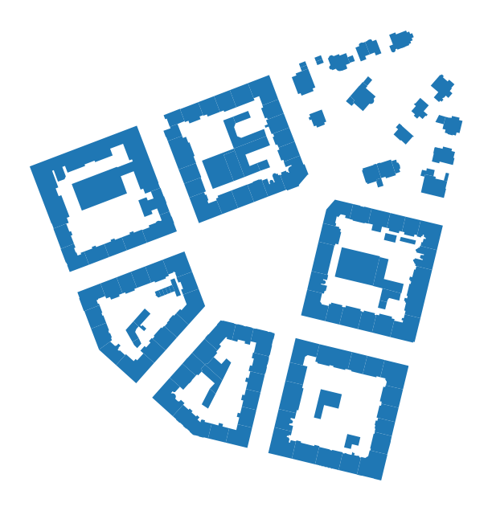
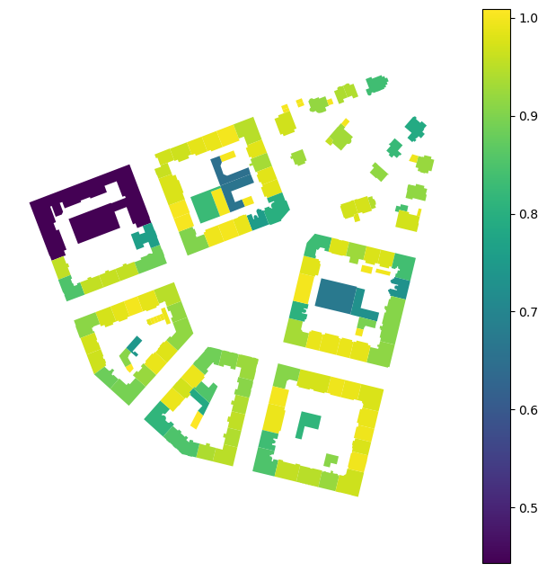
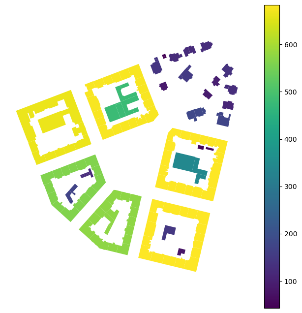
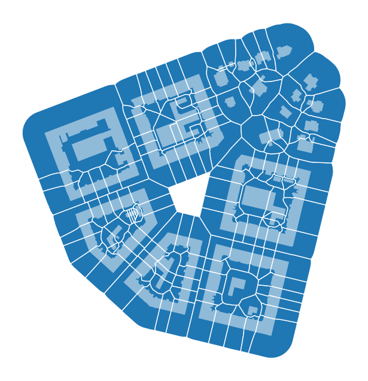
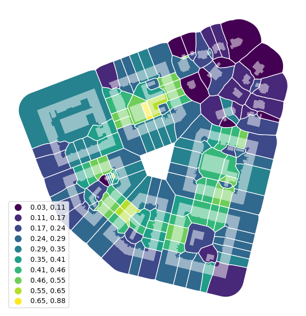
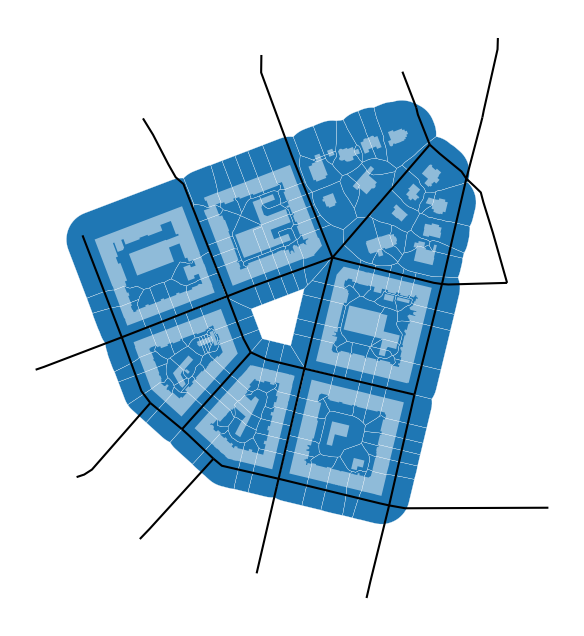
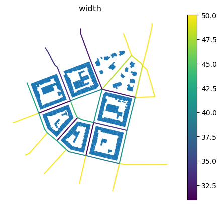
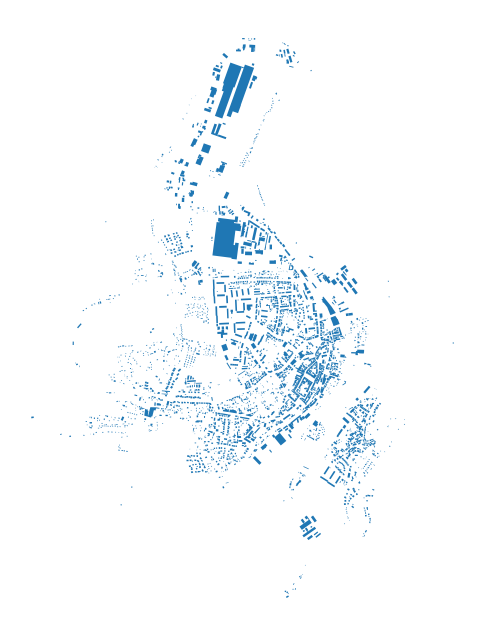
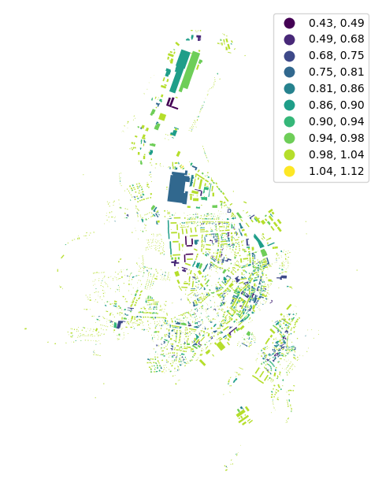

Note
Getting started#
An introduction to momepy#
Momepy is a library for quantitative analysis of urban form - urban morphometrics. It is built on top of GeoPandas, PySAL and networkX.
Some of the functionality that momepy offers:
Measuring dimensions of morphological elements, their parts, and aggregated structures.
Quantifying shapes of geometries representing a wide range of morphological features.
Capturing spatial distribution of elements of one kind as well as relationships between different kinds.
Computing density and other types of intensity characters.
Calculating diversity of various aspects of urban form.
Capturing connectivity of urban street networks
Generating relational elements of urban form (e.g. morphological tessellation)
Momepy aims to provide a wide range of tools for a systematic and exhaustive analysis of urban form. It can work with a wide range of elements, while focused on building footprints and street networks.
Installation#
Momepy can be easily installed using conda from conda-forge. For detailed installation instructions, please refer to the installation documentation.
conda install momepy -c conda-forge
Dependencies#
To run all examples in this notebook, you will need osmnx to download data from OpenStreetMap. You can install all using the following commands:
conda install osmnx -c conda-forge
Simple examples#
Here are simple examples using embedded bubenec dataset (part of the Bubeneč neighborhood in Prague).
[1]:
import geopandas as gpd
import momepy
Morphometric analysis using momepy usually starts with GeoPandas GeoDataFrame containing morphological elements. In this case, we will begin with buildings represented by their footprints.
We have imported momepy, geopandas to handle the spatial data, and matplotlib to get a bit more control over plotting. To load bubenec data, we need to get retrieve correct path using momepy.datasets.get_path("bubenec"). The dataset itself is a GeoPackage with more layers, and now we want buildings.
[2]:
buildings = gpd.read_file(
momepy.datasets.get_path("bubenec"), layer="buildings"
)
[3]:
ax = buildings.plot(figsize=(8, 8))
ax.set_axis_off()

Momepy defines function for each measurable character. To illustrate how momepy works, we can try to measure a few simple characters.
Equivalent rectangular index#
momepy.equivalent_rectangular_index is an example of a morphometric character capturing the shape of each object. It can be calculated using a simple function consuimg GeoPandas object:
[4]:
blg_eri = momepy.equivalent_rectangular_index(buildings)
/Users/martin/miniforge3/envs/momepy/lib/python3.11/site-packages/pandas/core/arraylike.py:492: RuntimeWarning: invalid value encountered in oriented_envelope
return getattr(ufunc, method)(*new_inputs, **kwargs)
The result is a pandas.Series.
[5]:
blg_eri.head()
[5]:
0 0.787923
1 0.443137
2 0.954253
3 0.851658
4 0.957543
dtype: float64
In a typical worflow, you add the result as a new column of the GeoDataFrame
[6]:
buildings["eri"] = momepy.equivalent_rectangular_index(buildings)
Check how it looks.
[7]:
ax = buildings.plot("eri", legend=True, figsize=(8, 8))
ax.set_axis_off()

Perimeter wall length#
Geometric elements are rarely considered individually. With urban fabric forming blocks like the one used here, you may be interseted in a length of the perceived perimeter wall of such a block. Note that all buildings forming the same wall share the resulting value.
[8]:
buildings["wall_length"] = momepy.perimeter_wall(buildings)
buildings.head()
[8]:
| uID | geometry | eri | wall_length | |
|---|---|---|---|---|
| 0 | 1 | POLYGON ((1603599.221 6464369.816, 1603602.984... | 0.787923 | 137.186310 |
| 1 | 2 | POLYGON ((1603042.88 6464261.498, 1603038.961 ... | 0.443137 | 663.342296 |
| 2 | 3 | POLYGON ((1603044.65 6464178.035, 1603049.192 ... | 0.954253 | 663.342296 |
| 3 | 4 | POLYGON ((1603036.557 6464141.467, 1603036.969... | 0.851658 | 663.342296 |
| 4 | 5 | POLYGON ((1603082.387 6464142.022, 1603081.574... | 0.957543 | 663.342296 |
[9]:
ax = buildings.plot("wall_length", legend=True, figsize=(8, 8))
ax.set_axis_off()

Capturing relation between different elements#
Urban form is a complex entity that needs to be represented by multiple morphological elements, and we need to be able to describe the relationship between them. With the absence of plots for our bubenec case, we can use morphological tessellation as the smallest spatial division.
[10]:
tessellation = momepy.morphological_tessellation(
buildings, clip=momepy.buffered_limit(buildings, buffer=50)
)
tessellation.head()
[10]:
| geometry | |
|---|---|
| 0 | POLYGON ((1603577.153 6464348.291, 1603576.946... |
| 1 | POLYGON ((1603166.356 6464326.62, 1603166.425 ... |
| 2 | POLYGON ((1603006.941 6464167.63, 1603009.97 6... |
| 3 | POLYGON ((1602988.227 6464129.905, 1602995.269... |
| 4 | POLYGON ((1603084.231 6464104.386, 1603083.773... |
[11]:
ax = tessellation.plot(edgecolor="white", figsize=(8, 8))
buildings.plot(ax=ax, color="white", alpha=0.5)
ax.set_axis_off()

Coverage area ratio#
Now we can calculate how big part of each tessellation cell is covered by a related building. This is straightforward without a need for an additional function, because the two have matching index. Buildings have the same index as related tessellation cells, which is used to link both together (see Data Structure).
[12]:
tessellation["CAR"] = buildings.area / tessellation.area
[13]:
ax = tessellation.plot(
"CAR",
edgecolor="white",
legend=True,
scheme="NaturalBreaks",
k=10,
legend_kwds={"loc": "lower left"},
figsize=(8, 8),
)
buildings.plot(ax=ax, color="white", alpha=0.5)
ax.set_axis_off()

Finally, to cover the last of the essential elements, we import the street network.
[14]:
streets = gpd.read_file(momepy.datasets.get_path("bubenec"), layer="streets")
[15]:
ax = tessellation.plot(edgecolor="white", linewidth=0.2, figsize=(8, 8))
buildings.plot(ax=ax, color="white", alpha=0.5)
streets.plot(ax=ax, color="black")
ax.set_axis_off()

Street profile#
momepy.street_profile captures the relations between the segments of the street network and buildings.
[16]:
profile = momepy.street_profile(streets, buildings)
profile.head()
[16]:
| width | openness | width_deviation | |
|---|---|---|---|
| 0 | 47.905964 | 0.946429 | 0.020420 |
| 1 | 42.418068 | 0.615385 | 2.644521 |
| 2 | 32.131831 | 0.608696 | 2.864438 |
| 3 | 50.000000 | 1.000000 | NaN |
| 4 | 50.000000 | 1.000000 | NaN |
We have now captured multiple characters of the street profile. As we did not specify building height (we do not know it for our data), we have widths (mean) - profile["width"], standard deviation of widths (along the segment) - profile["width_deviation"], and the degree of openness - profile["openness"].
[17]:
streets["width"] = profile["width"]
streets["openness"] = profile["openness"]
[18]:
ax = buildings.plot()
streets.plot("width", ax=ax, legend=True, figsize=(8, 8))
ax.set_axis_off()
_ = ax.set_title("width")

[19]:
ax = buildings.plot()
streets.plot("openness", ax=ax, legend=True, figsize=(8, 8))
ax.set_axis_off()
_ = ax.set_title("openness")
Using OpenStreetMap data#
In some cases (based on the completeness of OSM), we can use OpenStreetMap data without the need to save them to file and read them via GeoPandas. We can use OSMnx to retrieve them directly. In this example, we will download the building footprint of Kahla in Germany and project it to projected CRS. Momepy expects that all GeoDataFrames have the same (projected) CRS.
[20]:
import osmnx as ox
gdf = ox.features_from_place("Kahla, Germany", tags={"building": True})
gdf_projected = ox.projection.project_gdf(gdf)
/Users/martin/miniforge3/envs/momepy/lib/python3.11/site-packages/osmnx/features.py:294: FutureWarning: The 'unary_union' attribute is deprecated, use the 'union_all()' method instead.
polygon = gdf_place["geometry"].unary_union
[21]:
ax = gdf_projected.plot(figsize=(8, 8))
ax.set_axis_off()

Now we are in the same situation as we were above, and we can start our morphometric analysis as illustrated on the equivalent rectangular index below.
[22]:
gdf_projected["eri"] = momepy.equivalent_rectangular_index(gdf_projected)
[23]:
ax = gdf_projected.plot(
"eri", legend=True, scheme="NaturalBreaks", k=10, figsize=(8, 8)
)
ax.set_axis_off()

Next steps#
Now we have basic knowledge of what momepy is and how it works. It is time to install momepy (if you haven’t done so yet) and browse the rest of this user guide to see more examples. Once done, head to the API reference to see the full extent of characters momepy can capture and find those you need for your research.